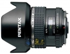

645 FA 45/2.8宾得镜头。
回楼下的，这镜头和老的手动版的都有，手动那支出片色彩偏暖，新的f a清冷一点。其他锐度啥的没什么分别。手感是手动的好，自动的有遮光罩。 总的来说是一枚优秀的镜头。
有很多自动对焦镜头在对焦的时候前端的对焦环会旋转。这支不会，非常好。
单反广角镜头不可避免的大。可是我还是希望小一点，轻一点。
在胶片机上作为标准广角镜头，视角非常舒服。但是在645D上由于有1.3x的crop factor，所以有点尴尬。
光学素质、轻便、大光圈、做工、操控性等等都没有缺点。
没有三防。
与老的手动的哪一个更好。
无
非常好的一支645标准广角镜头
分辨率、色彩、变形控制都非常好总之成像优秀！ 体积和重量都合适，外形也美观。
对焦环的AF/MF推拉转换不如35/3.5柔顺